Reference planes in assemblies
Reference planes exist in the Part, Sheet Metal and Assembly environments. You can use both part and assembly reference planes to position parts in an assembly. To make the assembly display more cleanly, reference planes for parts and subassemblies are displayed only when you place and edit them.
When designing a part or subassembly in the context of an assembly, you can also use the reference planes in a higher-level assembly document to define profiles, sketches, and feature extents for a part or subassembly.
Using part reference planes to position parts
Sometimes the part you want to place has no distinguishing features which you can use to apply assembly relationships. For example, an o-ring part (A) does not have any cylindrical or planar faces to position it properly in the groove on the shaft.
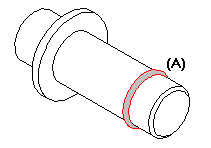
To position the o-ring on the shaft in the assembly, reference planes must exist in the correct locations in both the o-ring part and the shaft part.
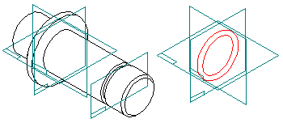
In some cases, by carefully constructing the parts with respect to the default base reference planes, you can use them for positioning. In other cases, you can create additional global reference planes in the proper locations.
For example, you can construct the o-ring part such that it is positioned symmetrically about the base reference planes.
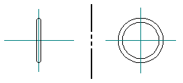
In addition to constructing the shaft part with respect to the base reference planes, you can add a parallel global reference plane (A) through the center of the groove on the shaft.
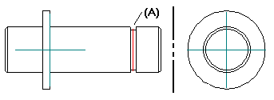
You can then mate or align the corresponding reference planes (A), (B), (C) to position the o-ring in the assembly.
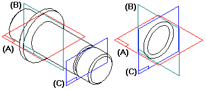
Displaying reference planes when placing parts
When you place a part into an assembly, you can display or hide its reference planes using the Construction Display button on the View tab. When you click the Construction Display button, options are available for controlling the display of a part's reference planes, sketches, construction surfaces, and so on.
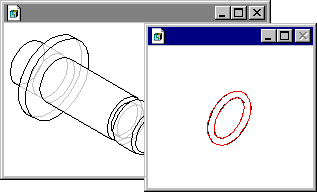
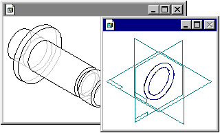
With the part's reference planes displayed, you can then select one of them to position the part.
If you are placing a subassembly, you can display the reference planes of one of its parts by clicking that part, then clicking the Construction Display button.
When you complete the positioning process, the part's reference planes are hidden automatically.
Displaying reference planes when repositioning parts
You can also use part reference planes when you reposition a part in the assembly. Select the part you want to reposition, then click the Edit Definition button on the Select command bar. Use the Relationship List box on the Assemble bar to select the assembly relationship you want to edit. As you proceed through the steps for editing the assembly relationship, the Construction Display button is available whenever a part is selected.
You can also use the Show/Hide Component→Reference Planes command on the shortcut menu to manually control the display of reference planes for a part.
Controlling the angular orientation of a part using reference planes
You can also use global reference planes to control the angular orientation of a part about an axis.
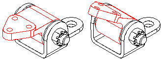
For example, you can use an angular reference plane constructed in the pivot block part to position it in the assembly.
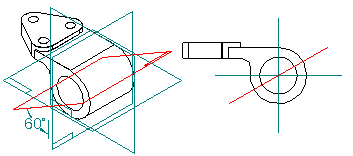
In this case, a floating mate relationship was applied between the angular reference plane (A) and the planar face (B) on the bracket part.
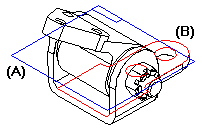
If you edit the angular value of the dimension for the reference plane in the Part environment, the part will rotate in the assembly.
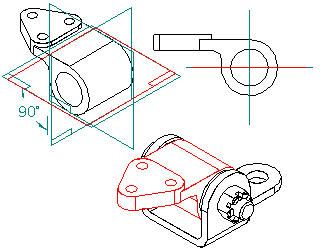
It is important to construct the angular reference plane correctly with respect to the other features on the part. Notice that the angular reference plane (A) passes through the center of the hole feature (B). The hole feature is then used to apply an axial align relationship in the assembly.
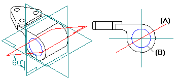
This ensures that when the dimensional value for the reference plane is edited, the part will rotate correctly in the assembly.
Using assembly reference planes to position parts
You can also use assembly reference planes to position a part in an assembly. The first part (A) you place in an assembly is placed grounded, with the same orientation it has in the part document.
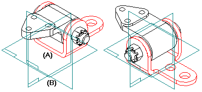
You can use the Assemble command bar to reposition the part in the assembly using the base reference planes (B) in the assembly.
Using assembly reference planes in other documents
When designing a part or subassembly in the context of an assembly, you can also use the reference planes in a higher-level assembly document to define profiles, sketches, and feature extents for a part or subassembly on which you are currently working.
For example, you can offset a parallel reference plane (A) from one of the default assembly reference planes.
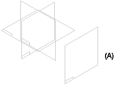
You can then place a part into the assembly, in-place activate the part, and use the parallel reference plane you created to define the feature extent for a protrusion feature. To select an assembly reference plane that is outside of the current document, press and hold the Shift key, then select the reference plane.
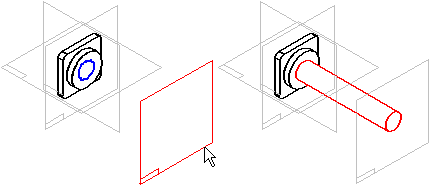
When you use a reference plane outside of the current document in this manner, an associative inter-part link is created. For more information, see the Inter-Part Associativity Help topic.
Later, when you return to the assembly, you can edit the offset value of the assembly reference plane to change the feature extent. To edit the offset value of an assembly reference plane, select the reference plane in the top pane of PathFinder, then select the offset value in the bottom pane. You can then type a new value in the command bar. You can also use the variable table to edit the offset value of the assembly reference plane.
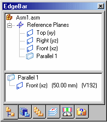
How do I
Create a coincident reference planeCreate a Coincident Reference Plane (ordered)
Create a coincident reference plane by axis (ordered modeling)
Create a reference plane by 3 points
Create a reference plane by 3 points (ordered)
Create a reference plane normal to a curve
Create a reference plane normal to a curve (ordered)
Create a tangent reference plane (synchronous)
Create a tangent reference plane (ordered)
Create a parallel reference plane
Create an angled reference plane
Create a perpendicular reference plane
Resize a reference plane
Change reference plane name display
Learn more
Working with reference planesExamples: Defining reference plane orientation (ordered)
Look up more details
Coincident Plane command (ordered)Coincident Plane command (synchronous)
Coincident Plane command bar
By 3 Points command
By 3 Points command bar
Normal to Curve command
Normal to Curve command bar
Tangent Plane command
Tangent Plane command bar
Parallel Plane command
Parallel Plane command bar
Angled Plane command
Angled Plane command bar
Coincident Plane By Axis command
Coincident Plane By Axis command bar
Perpendicular Plane command
Perpendicular Plane command bar
Create Reference Plane command bar
Edit Reference Plane command bar
Reference plane command bar
Reference Plane Selection command bar
Resize Plane command
Resize Plane command bar
Show All Reference Planes command
Hide All Reference Planes command